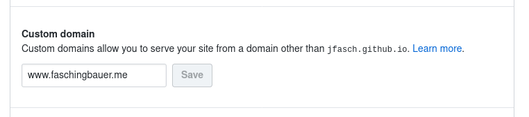

Adding a Custom Domain to a Github Pages Project Site¶
In the previous post I pushed generated static site content to Github Pages, to be served as https://jfasch.github.io/jfasch-home-pages/.
Not being a marketing expert (the opposite is the case), I do suspect that promoting that URL as my homepage would appear unprofessional. Rather,
I own a domain,
faschingbauer.meTo make things easy for people who have the intention of throwing money at me, I want to have the following URLs point to the above Github Pages site:
This is remarkably simple nowadays. The Github Pages documentation is a little confusing: they only talk about user and organization pages, and not about project pages. There are numerous posts on the internet that suggest that adding a custom domain to a project page has been cumbersome in the past - these days are over, apparently. Following is what I did.
Configure a Subdomain, www.faschingbauer.me¶
For the
jfasch-home-pagesproject, configure a custom domain(Enforcing HTTPS also makes sense, while we are at it)
All this does is to create a
docs/CNAME; pull the changes,$ cd $HOME/jfasch-home-pages $ git pull
Point
www.faschingbauer.metojfasch.github.ioAt your DNS provider, create a
CNAMEDNS record forwww.faschingbauer.meand set its value to point tojfasch.github.io. Wait a day before you publish the new site URL - it may take some time until the changes have propagated to other name servers. Check like so,$ dig www.faschingbauer.me ;www.faschingbauer.me. IN A ;; ANSWER SECTION: www.faschingbauer.me. 1100 IN CNAME jfasch.github.io. jfasch.github.io. 3600 IN A 185.199.109.153 jfasch.github.io. 3600 IN A 185.199.111.153 jfasch.github.io. 3600 IN A 185.199.110.153 jfasch.github.io. 3600 IN A 185.199.108.153
(Output stripped for brevity.) In the
ANSWER SECTIONyou can see thatwww.faschingbauer.me.(the trailing dot says this is a FQDN “Fully Qualified Domain Name”) is an alias (CNAME) forjfasch.github.io.. And btw.,jfasch.github.io.has four addresses (A).Done; surf to https://www.faschingbauer.me.
Configure an Apex Domain, faschingbauer.me¶
We have the subdomain www.faschingbauer.me in place, pointing to
our site; now we want faschingbauer.me to go to the same
site. Github automatically, magically, apparently, redirects between
apex and subdomains. Consequentially, it is just a matter of DNS
configuration: at the DNS provider, arrange that faschingbauer.me
points to one or more of Github’s static IP addresses (taken from the
output of the above dig command). These are,
185.199.108.153
185.199.109.153
185.199.110.153
185.199.111.153
Go to the DNS provider, and arrange that the DNS address (A) record
for faschingbauer.me points to one or all of these addresses.